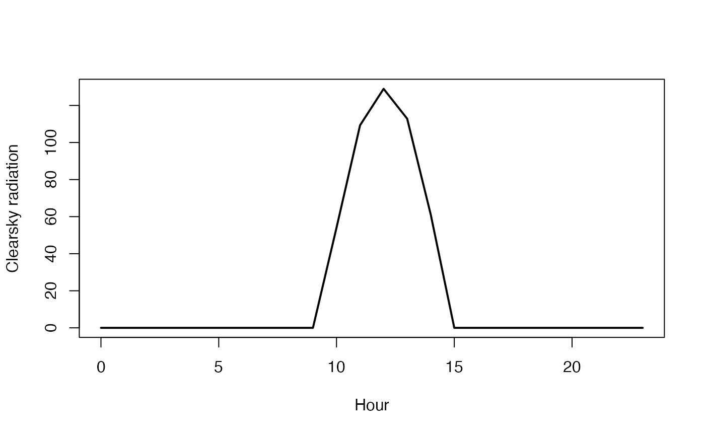

Calculates clear sky radiation
Usage
clearskyrad(jd, lt, lat, long, tc = 15, rh = 80, pk = 101.3)
Arguments
- jd
astronomical Julian day
- lt
local time (decimal hours)
- lat
latitude (decimal degrees)
- long
longitude (decimal degrees)
- tc
temperature (deg C)
- rh
relative humidity (percentage)
- pk
atmospheric pressure (kPa)
Value
expected clear-sky radiation (W/m^2)
Examples
jd <- 2459752 #"2022-06-21" as julian day
jd<-2459215 # 01/01/2021
tme<-seq(0,23,1)
csr<-clearskyrad(jd,tme,60,0)
plot(csr ~ tme, type = "l", lwd = 2, xlab = expression(paste("Hour")), ylab = "Clearsky radiation")

print(sum(csr))
#> [1] 466.2853